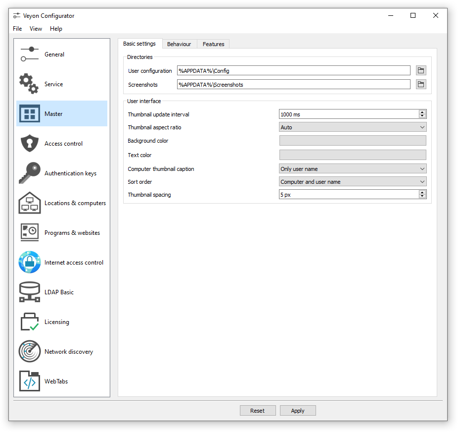

Veyon Master
El panel del profesorado: miniaturas en vivo, control remoto, demostraciones, bloqueo y envío de archivos.
Veyon —de Virtual Eye On Networks— es una plataforma multiplataforma para supervisar y controlar equipos en red, pensada para el ámbito educativo: aulas de informática, laboratorios universitarios, formación técnica y sesiones a distancia. Nosotros la licenciamos, la mantenemos actualizada y la sostenemos en el tiempo dentro de tu institución.
Una sola instalación contiene todos los componentes; en cada equipo eliges cuáles se activan.
El panel del profesorado: miniaturas en vivo, control remoto, demostraciones, bloqueo y envío de archivos.
El servicio que corre en cada puesto y atiende, ya autenticadas, las peticiones del panel.
La consola del administrador: claves, autenticación, red, directorio LDAP y ajustes del servicio.
La herramienta de línea de comandos para automatizar despliegues, claves e importación de aulas.
Una herramienta capaz de ver y manejar los equipos del aula solo tiene sentido si el acceso está bien acotado. Veyon cifra la comunicación con TLS y no autoriza ninguna conexión que no supere el método de autenticación configurado.

Te mostramos Veyon funcionando sobre tus propios equipos, sin costo y sin compromiso. Si encaja, te enviamos la propuesta con precio cerrado.